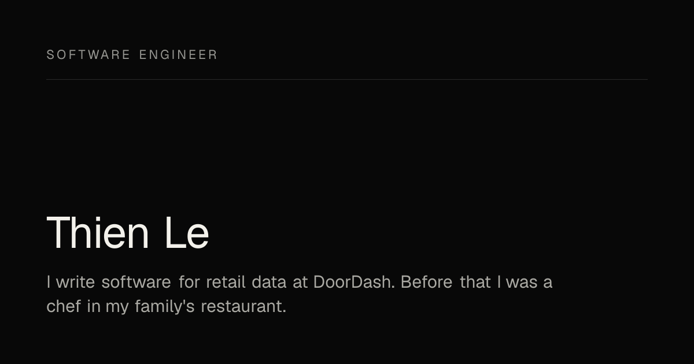
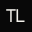
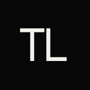

The share card
What LinkedIn, Slack and iMessage show for a link to the site, before anyone clicks. Today it is a black template from before round 21. Here it is the morning sky: a line strung between a bamboo pole and a pine that both stand in the bank, and the DoorDash ticket from the oak hanging from it. 17h → 3m is the engineering; 2 → 25 is the agent work. Every word and figure is already on the site.
Today

A · the name, and the ticketRecommended: the name is what a feed reader needs; the h1 is waiting on the page.
B · the h1, the name as its labelThe hero's voice. Smaller name, more words to read at feed size.
As it is seen
552px is a LinkedIn post on a laptop; 360px is Slack, iMessage, or LinkedIn on a phone. At 360 only the name and the two figures need to read.
Optional · the tab icon
Not asked for. src/app/icon.tsx and apple-icon.tsx are the same black leftover. Built only if you say so.


TL
TL
To decide
- A or B.
- The tab icon too, or not.
- The build needs two font files the card can read (Satori takes TTF, not the woff2 the site serves): Bricolage Grotesque and Courier Prime, from Google Fonts, both under the SIL Open Font Licence. I'll name each file and its size before downloading.